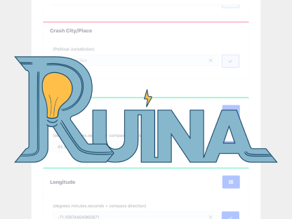
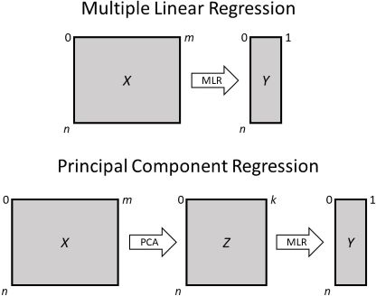
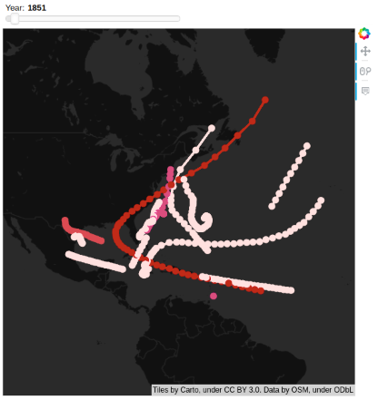

Tell the Story of What You Make Portfolio
Tell the Story of What You Make is a popular graphic design class
at Olin. Through various mini projects, I greatly improved my visual
communication skills. I mainly used Adobe Illustrator to create the
posters and logos.

Ruina Crash Reporting App
For my senior capstone project at Olin, I worked with four other students
to create a mobile application, Ruina, that improves and standardizes the
car crash reporting system. Ruina follows the Department of Transportation’s
data collection guidelines, supports versatile data export formats, and includes
features such as GPS mapping and barcode scanning to auto populate fields and
speed up the experience.
Advanced Algorithms Student-Led Course
I worked with two other students to design a student-led course on Advanced
Algorithms. Our course covered topics including linear programming, network
flows, complexity classes, approximation algorithms, integer programming, and
heuristic algorithms. We created all of the lecture materials and assignments.
The class was given remotely over Zoom.
Materials available upon request

Fake Anglican
For my Programming Languages final project, I worked with a classmate
to build a functional programming language with a Scheme-like syntax.
The programming language consists of an interactive shell, an s-expression
parser, various Expression classes making up the source code, and multiple
runtime representation Value classes. We called the language Fake Anglican
because it is based on Anglican, a probabilistic programming language.
PageRank Algorithm
For my final project in Advanced Algorithms, I worked with a classmate to
delve into how the PageRank algorithm works. We created 3 different PageRank
implementations and applied them to 3 applications: twitter social networks,
a small section of Google's web graph, and a network of Wikipedia hyperlinks.
Finding Cliques in Networks
For my final project in Discrete Math, I worked with a classmate on a project
focusing on clique-finding algorithms in networks. We implemented the Bron-Kerbosch
(BK) Algorithm to identify maximal cliques in two large networks: an Amazon co-purchasing
network and a research institute email network.
3D Graphics with OpenGL
I worked with two classmates in Software Systems on a project exploring 3D
Graphics using OpenGL. The goal was to create an interactive visualization of
3D objects rendered and shaded using OpenGL, which could then potentially be
overlayed in real-world environments by detecting OpenCV’s augmented reality
markers (ArUco markers) via a webcam or Android device.
Software Systems Optimat
In one of my Software Systems class projects, I worked with two
classmates to implement what we learned to generate efficient matrix
multiplication algorithms.
Adryft String Art Machine
As part of Olin's Principles of Engineering class, my team and I designed
and fabricated a CNC string art machine. I mainly worked on the software
and electrical components.
Data Science Class Projects
In the Olin Data Science class, I completed three projects.
For my first project, I analyzed how subjective classes compare
to income classes. For my second project, I investigated the gender
pay gap. For my third project, I found that logistic regression results
in higher accuracy for predicting the presence of heart disease compared
to more complicated machine learning techniques.

Principal Component Analysis Part 2
For my final project in Linearity 2, I decided to learn more about
principal component analysis. Specifically, I investigated and applied
principal component regression.
Principal Component Analysis Part 1
For my final project in Linearity 1, I worked with a classmate to
learn about and implement PCA, PCoA, and SVD. The use cases range
from simple data matrices to metagenomics to text analysis.
Paletteful
Paletteful is a website where users can generate color palettes from
inputted images using color theory, color quantization, and k-means
clustering. Its purpose is to extract usefulness from people's favorite
images through user-friendly tools, such as downloadable color palettes
and image sentiment analysis. I worked with three other people on this project.

Cat Map
Cat Map is an interactive visualization of hurricane data within the NOAA database.
I completed this project with a classmate as part of my Software Design class.
Pen Plotter
During the summer before college, I decided to build a pen plotter from scratch.
I designed the mechanical, electrical, and software components. It was my first
hands-on engineering project experience!
Amity
I worked with four other people to develop an Android app, Amity,
addressing the problem of cultural divisiveness through a user-friendly
culture sharing platform. I designed part of the user interface and
created a 3D globe feature. As a team, we completed the entire ideation
process, starting from brainstorming to writing a business plan. This
project was awarded as a Semifinalist in the Technovation Challenge.